Calhas, Rufos, Telhados e Reformas no ABC Paulista e SP
Instalação, limpeza, manutenção de calhas e rufos, reforma de telhados, impermeabilização com manta líquida e reformas em geral. Acabamento profissional, segurança e garantia comprovada da SOS Reformas (sua conhecida SOS Calhas ABC).
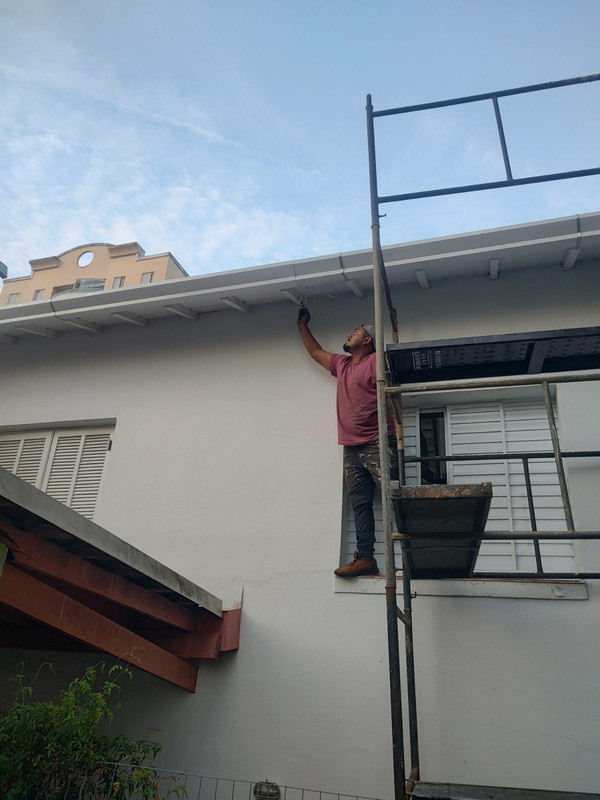
A SOS Calhas ABC agora é SOS Reformas
Com anos de excelência em Santo André, São Bernardo do Campo, São Caetano do Sul, Diadema, Mauá e São Paulo, expandimos nossa estrutura para cuidar do seu imóvel por completo. A mesma equipe de confiança, com soluções integradas de calhas, coberturas, impermeabilizações e reformas.
Calhas e Rufos Sob Medida
Fabricação, instalação e substituição de calhas de alumínio, chapas galvanizadas, rufos de encosto e pingadeiras para vedação total.
Limpeza e Desentupimento
Remoção de folhas, detritos acumulados e desobstrução de condutores de água para evitar transbordamento e danos na laje.
Reforma de Telhados
Conserto estrutural de telhados, substituição de telhas quebradas, alinhamento de madeiramento e solução definitiva de vazamentos.
Impermeabilização
Aplicação técnica de manta líquida e borracha líquida para blindagem contra umidade, goteiras e infiltrações em lajes e telhas.
Pintura Térmica e Emborrachada
Pintura especializada para renovação estética, vedação de microfissuras e conforto térmico para telhas cerâmicas e fibrocimento.
Reformas em Geral
Serviços completos de reformas residenciais e comerciais no ABC Paulista com compromisso de prazo, limpeza e qualidade.
Serviços de Calhas e Rufos no ABC Paulista
Instalação, limpeza e manutenção com qualidade em Santo André, São Bernardo e região
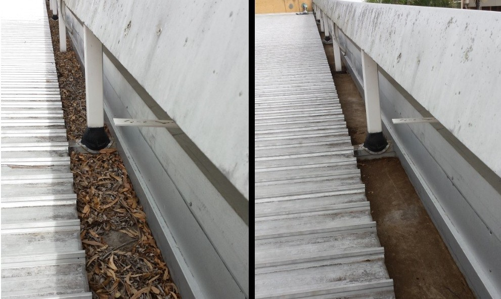
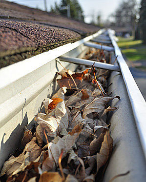
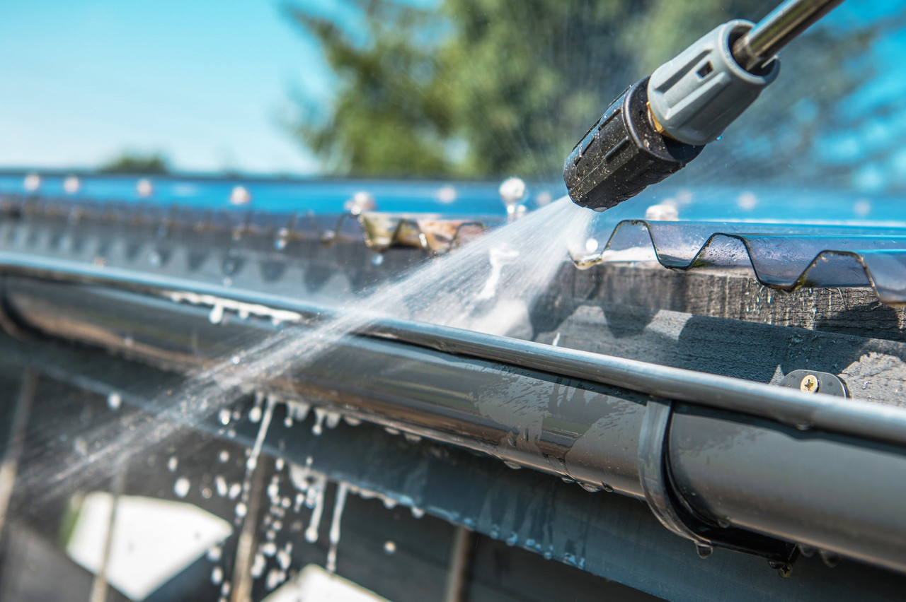
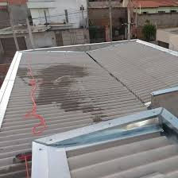
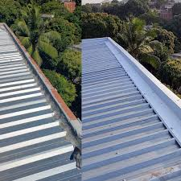
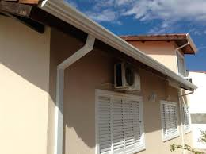
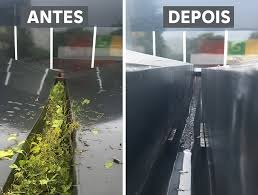
Manutenção de Telhados e Calhas na prática
Acompanhe cada etapa do trabalho
INÍCIO DO SERVIÇO
EXECUÇÃO DO SERVIÇO
FINALIZAÇÃO DO SERVIÇO
Pintura de Telhados e Impermeabilização no ABC
Também trabalhamos com pintura de telhados e aplicação de soluções de proteção para vedação, impermeabilização e reforço da durabilidade da cobertura.
Esse serviço ajuda a reduzir desgaste causado pelo tempo, melhorar o acabamento do telhado e aumentar a proteção contra infiltrações e umidade.
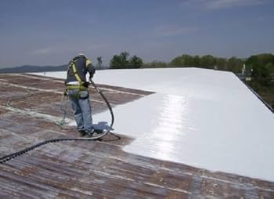
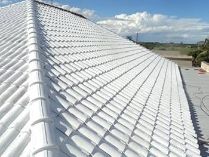
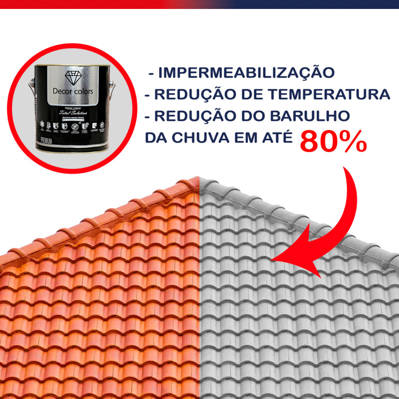
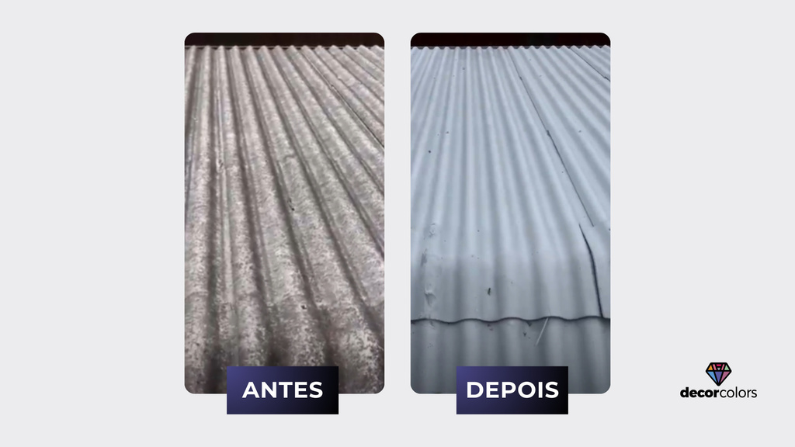
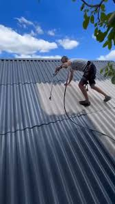
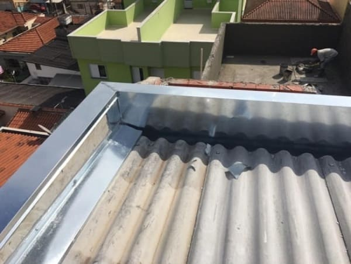
Dúvidas Frequentes sobre Calhas, Telhados e Reformas
Tire suas dúvidas antes de solicitar seu orçamento sem compromisso
Quais serviços a SOS Reformas (antiga SOS Calhas ABC) realiza?
Atuamos com fabricação, instalação e troca de calhas e rufos, limpeza preventiva e desentupimento, manutenção e reforma completa de telhados, impermeabilização com manta líquida e borracha líquida contra vazamentos, pintura térmica de coberturas e reformas gerais residenciais e comerciais.
Como posso solicitar um orçamento rápido?
Você pode clicar em qualquer botão do WhatsApp no site ou chamar diretamente pelos números (11) 94781-7385 (Leonardo) ou (11) 98302-9180 (Manoel). O envio de fotos ou vídeos do local ajuda a agilizar a estimativa inicial.
A pintura e impermeabilização com manta líquida resolvem vazamentos?
Sim. A manta líquida ou borracha líquida forma uma película elástica e contínua sem emendas, vedando microfissuras em telhas e fixadores, acabando com goteiras e reduzindo a temperatura do ambiente.
Qual a periodicidade indicada para limpeza de calhas?
Recomendamos fazer a manutenção e desobstrução das calhas a cada 6 meses. Se o imóvel estiver cercado por árvores, a revisão deve ser feita a cada 3 a 4 meses para evitar que folhas e poeira entupam os condutores de água da chuva.
Quais cidades do ABC Paulista e SP vocês atendem?
Atendemos toda a região do Grande ABC: Santo André, São Bernardo do Campo, São Caetano do Sul, Diadema, Mauá, Ribeirão Pires, Rio Grande da Serra, além de toda a cidade de São Paulo e Grande SP.
Por que escolher a SOS Reformas (antiga SOS Calhas ABC) no ABC e São Paulo?
Se você procura por instalação de calhas no ABC Paulista, manutenção de rufos, reforma de telhados ou impermeabilização com manta líquida, a SOS Reformas é a sua escolha de confiança. Atendemos com agilidade, transparência e garantia em Santo André, São Bernardo do Campo, São Caetano do Sul, Diadema, Mauá e em toda a Grande São Paulo.
Nossos serviços previnem infiltrações, goteiras, mofo e danos estruturais graves ao seu imóvel. Trabalhamos exclusivamente com materiais de primeira linha (alumínio, chapa galvanizada, borracha líquida e tintas térmicas emborrachadas) para que sua residência, condomínio ou comércio fiquem completamente blindados contra tempestades. Resolva problemas de calhas entupidas e vazamentos no telhado com técnicos experientes e garantia de serviço.